Para presentar en vivo
- Abre el MP4 en pantalla completa (Preview o VLC).
- Pausa al final de cada escena y narra durante los 10 s de aire.
- Avanza manualmente con la barra espaciadora cuando estés listo.
Dos motion graphics mudos para proyectar en reuniones y narrar en vivo. Cada escena deja 10 s en pantalla para explicar.
Un framework de IA transversal para cualquier proyecto de Liverpool. Lo validamos primero con PIM como Piloto 01, pero no se construye solo para PIM.
GIFs cortos para pegar en Confluence, Slack o Jira. Cada uno contiene solo la animación — sin la pausa de 10 s para narrar.
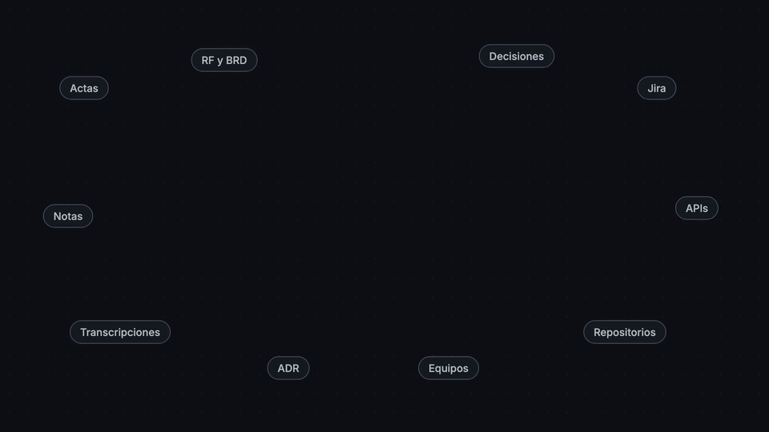
El flujo entre el seller, el PIM y los canales explicado paso a paso. Solo 8 llamadas catalogan; las otras 33 rutas son el ciclo que viene después y pasa en segundo plano.
Cada lámina es un fotograma final de su escena. Útiles para repasar un paso específico sin ver todo el video.
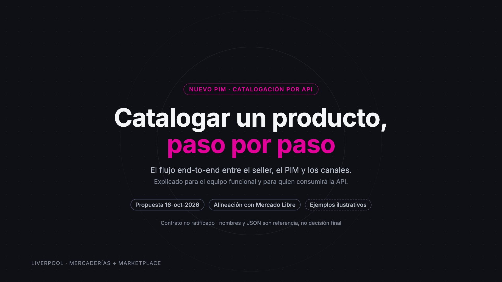
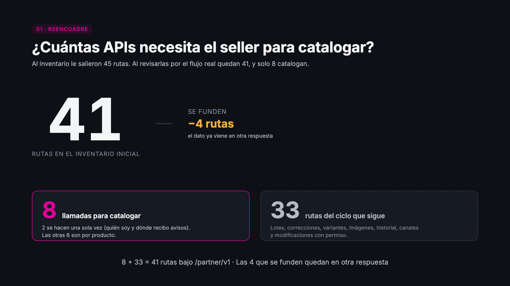
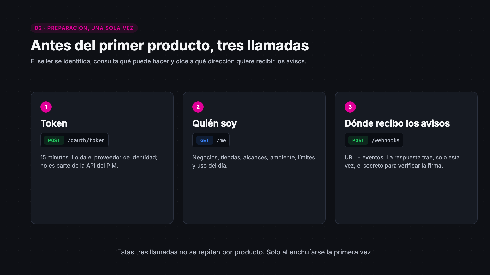
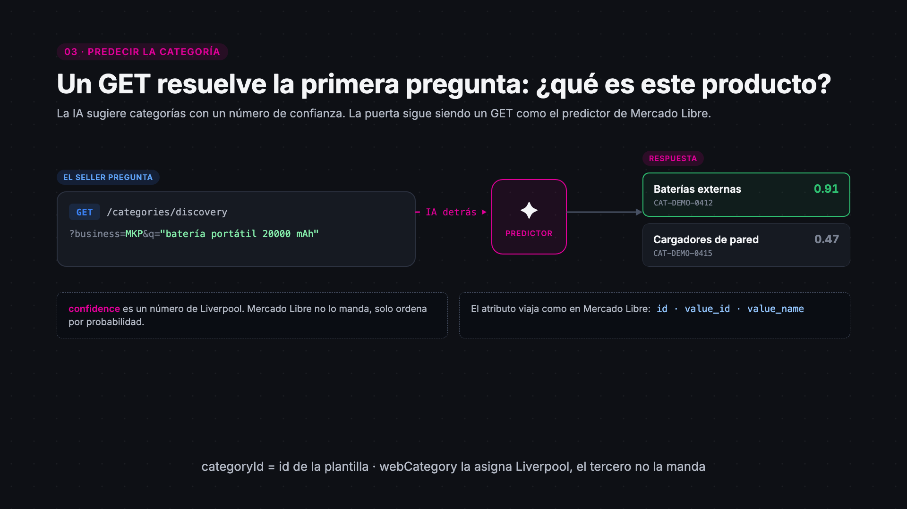
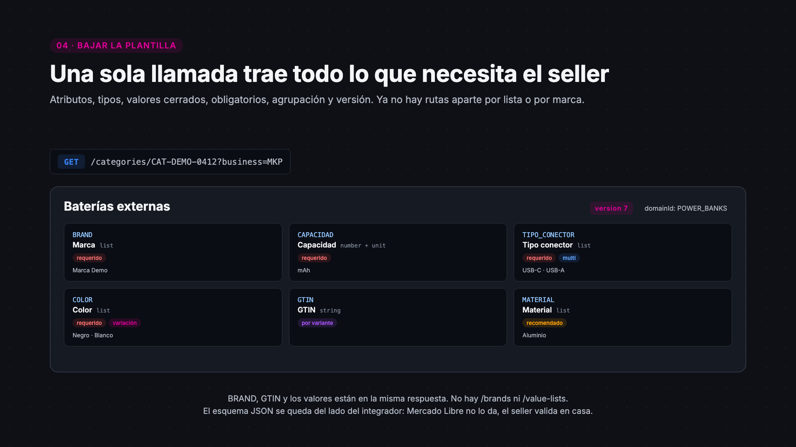
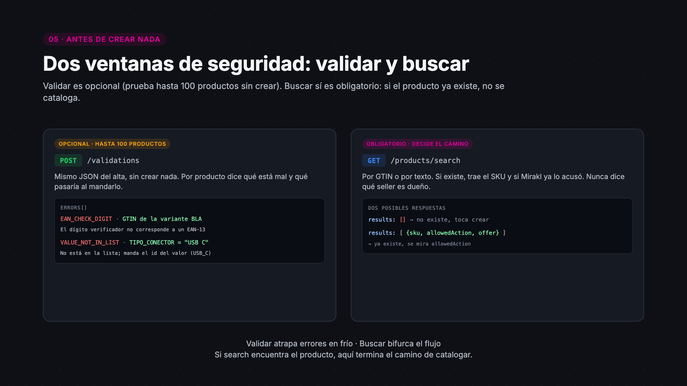
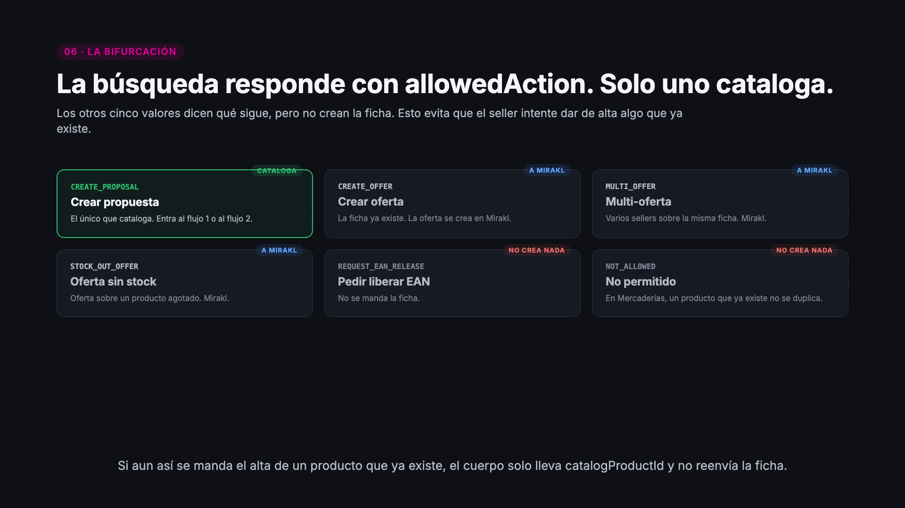
allowedAction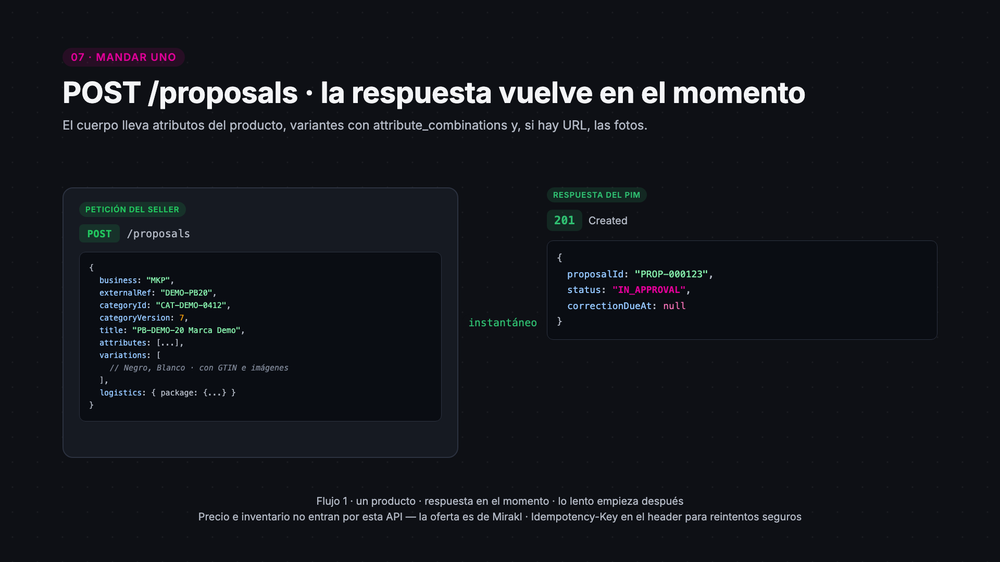
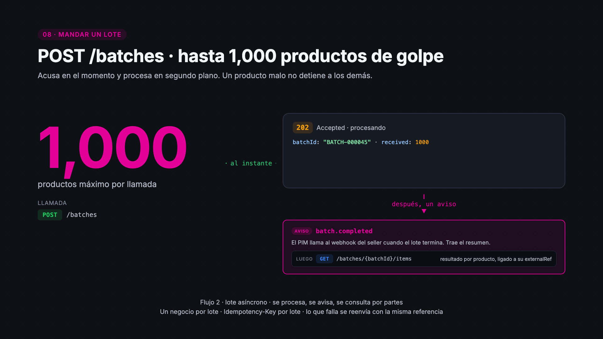
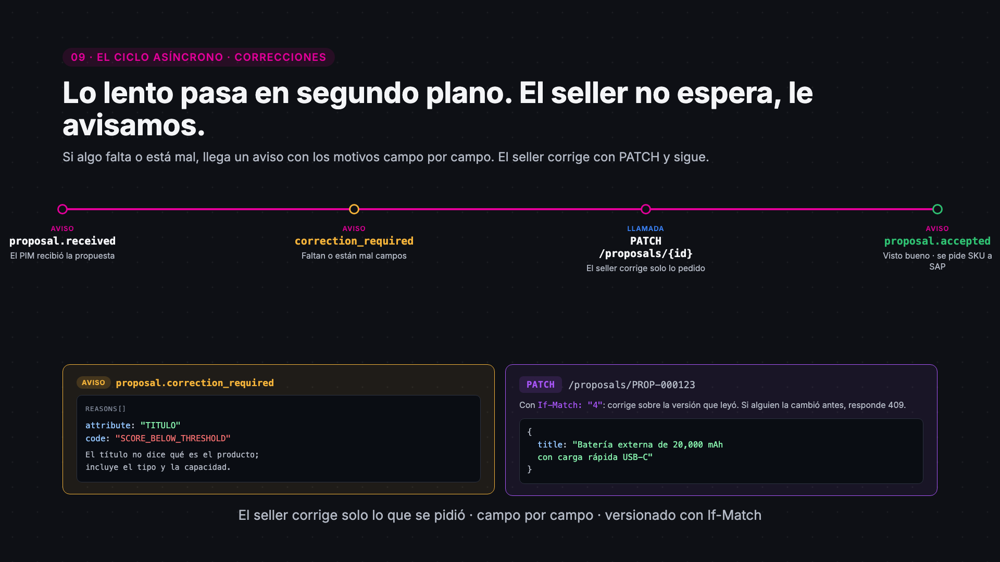
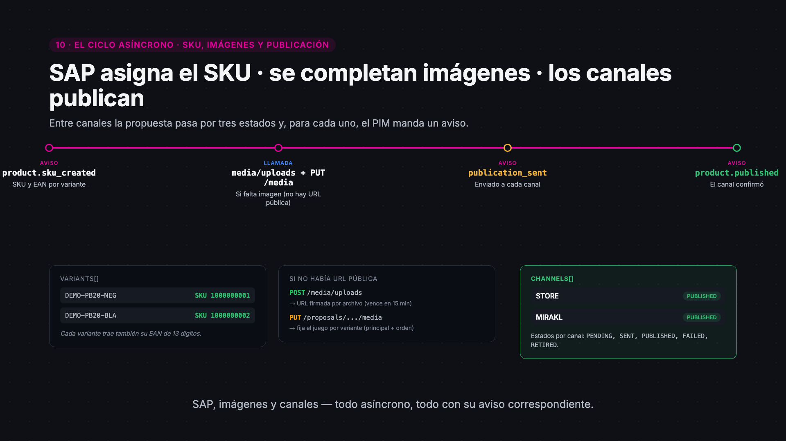
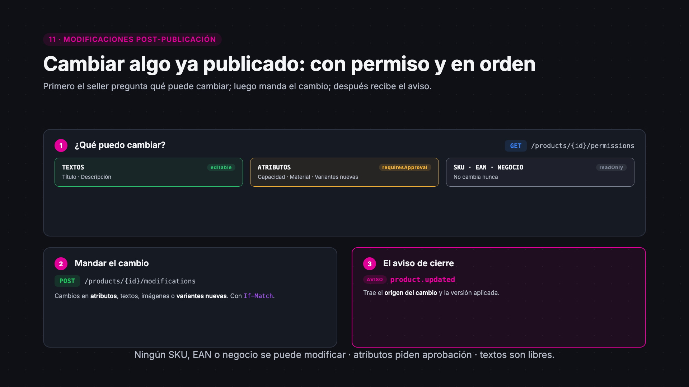
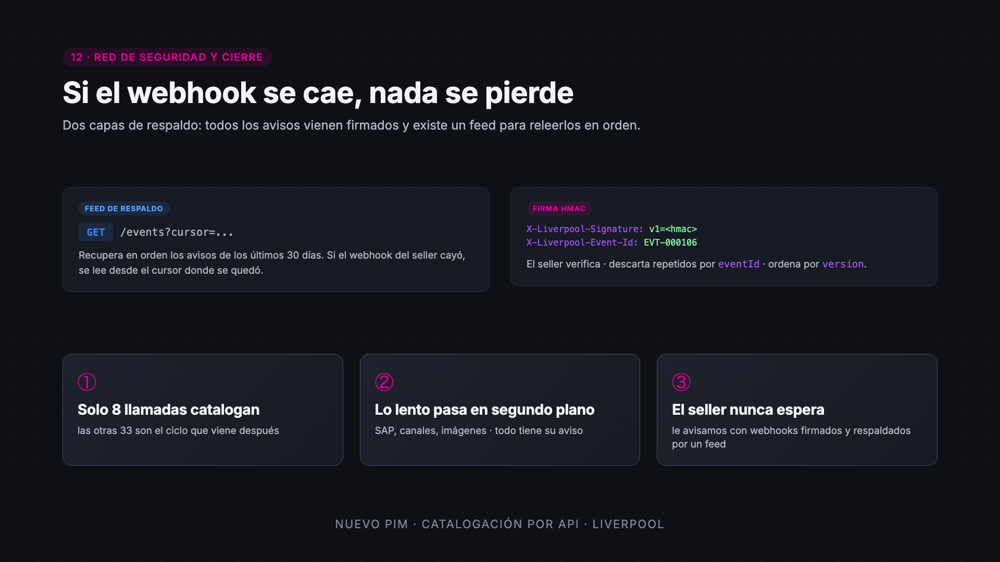
Ideal para colgar en una página de Confluence o pegar en Slack como teaser.
<video
controls playsinline preload="metadata"
poster="poster.jpg">
<source src="video.mp4" type="video/mp4">
</video>El MP4 lleva faststart: empieza a reproducirse mientras descarga.
Usa los GIFs animados (framework) o las láminas PNG (catalogación). Arrastra el archivo al documento y queda inline.
Para enviar el PDF del storyboard: Descargar PDF.
Puedes compartir URLs específicas:
…/#framework — abre el video del framework…/#catalogacion — abre el flujo de API…/#como-usar — esta sección